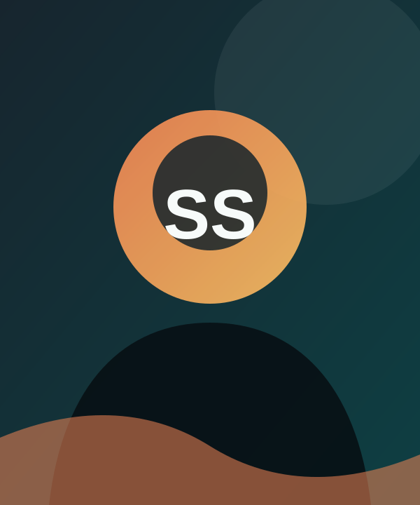

Education
Available for opportunities
Hi, I'm Srikailash
AI & Data Science Student
I turn curious questions into practical software. I am exploring the intersection of Java development, intelligent systems, and thoughtful web experiences.

Replace withyour portrait
Build. Learn.
Repeat.
Repeat.
Always
curious
curious
01 / About me
Building with a learner's mindset.
I am a B.Tech Artificial Intelligence and Data Science student who enjoys making complex ideas useful through software.
My interests span Java development, AI and machine learning, data science, and web development. I enjoy solving problems methodically, working with new tools, and turning each project into a sharper understanding of how technology can serve people.
At the moment, I am focused on growing into a dependable software developer through practical projects, collaboration, and continuous learning.
Focus
Software Development & AI
Experience
Advanced Java Developer Intern
02 / Toolkit
Skills that ship ideas.
Growing a practical toolkit across product development, data, and intelligent systems.
Programming
JavaStrong
PythonStrong
JavaScriptGrowing
SQLStrong
Web Development
HTMLStrong
CSSGrowing
JavaScriptGrowing
Data & AI
NumPyGrowing
PandasGrowing
Machine LearningExploring
Data AnalysisGrowing
Tools & Database
MySQLStrong
Git / GitHubStrong
VS CodeDaily
03 / Selected work
Projects with a purpose.
A few practical builds across product interfaces, data, and intelligent systems.
01Web / Database
Mini OLX
A database-driven online marketplace application that allows users to manage and browse product listings.
02AI / ML
Active Learning Based Anomaly Detection System for E-Commerce
A machine learning system designed to identify potentially fraudulent or anomalous e-commerce transactions using labeled and unlabeled transaction data.
03Java / AI
CarePulse – AI-Driven Healthcare Monitoring System
A conceptual healthcare monitoring platform designed for patient record management, real-time monitoring, anomaly detection, alerts and reporting.
04Web Platform
Food Delivery Platform
A food delivery platform concept focused on a customer-friendly ordering experience with a no-delivery-fee model.
Project links currently use placeholders. Replace them with your live demos and repositories.
04 / Experience
Learning by doing.
Internship
Advanced Java Developer Intern
Vedupskilling
Developed a stronger foundation in Java development, object-oriented programming, application development, database integration, problem solving, and practical software development practices.
View Internship Certificate05 / Education
The foundation behind the work.
202X – Present
K. Ramakrishnan College of Engineering
B.Tech – Artificial Intelligence and Data Science
Building a strong base in software engineering, data, and intelligent systems.Completed
SVM Matriculation Higher Secondary School
Tiruchirappalli
06 / Credentials
Always leveling up.
Certificates and milestones will live here as the journey continues.
07 / Contact
Let's connect.
Have an opportunity, idea, or just want to talk about technology? My inbox is open.